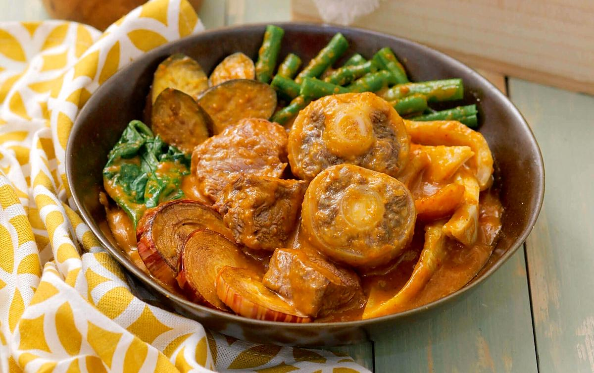

Home
Kare-kare

Description
A traditional Filipino dish made with oxtail and a rich peanut sauce. It is often served with bagoong (fermented shrimp paste) on the side.
Ingredients
- 2 lbs oxtail
- 1/2 cup peanut butter
- 1/4 cup rice flour
- 1 banana heart, sliced
- 1 eggplant, sliced
- 1 bunch of bok choy
- 2 tablespoons bagoong (fermented shrimp paste)
- Salt and pepper to taste
Instructions
- In a large pot, boil the oxtail until tender.
- In a separate pan, sauté the banana heart, eggplant, and bok choy.
- Once the oxtail is tender, add the sautéed vegetables to the pot.
- In a bowl, mix the peanut butter and rice flour with some water tocreate a smooth paste.
- Add the peanut butter mixture to the pot and stir well.
- Season with bagoong, salt, and pepper to taste.
- Simmer for 10-15 minutes, then serve hot with rice.